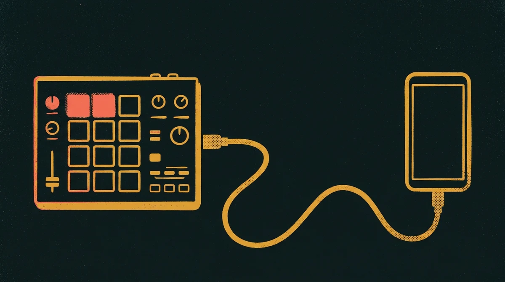
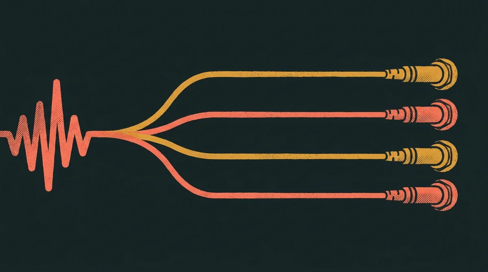

Samples from your phone to +Drive
Rytm Mobile
Get any sound onto your Rytm from your phone. Chop a voice memo, a screen recording or a whole track, split it into stems, and send it straight to +Drive over USB. Or record it straight into the phone, from the mic or a USB audio input.
Android 10 or newer. The app isn't on the Play Store: you download the file here and install it yourself.
Your part
- Install the app. On the phone.
- Plug in the Rytm. An OTG cable and USB MIDI mode.
- Only for Split: set up your Mac or Linux computer, then pair the app.

What it does
three tabs- Rytm. Browse the Rytm's +Drive, make folders, delete samples, and send new ones over USB‑MIDI, with Elektron's own SysEx file protocol, ported from Elektroid.
- Chop. Open any audio or video file, trim it on the waveform, normalize and fade it. It comes out 48 kHz, 16‑bit mono, the Rytm's native format.
- Split. Separate a track into stems: six instruments, four, vocals and instrumental, or a drum kit. The splitting runs on your own computer.
- Record. Capture a sound with the phone's mic or a USB audio input, then chop it, split it or send it.
- Updates. When a new version is on this site, the app offers it and checks its SHA‑256 before Android installs it.
1. Install the app
on the phone- On the phone, tap Download APK above.
- Open the downloaded file. Android asks whether your browser or file app may install apps. Allow it for that app only.
- Play Protect may warn that it doesn't know this developer. The app isn't on the Play Store, so that's expected. Choose to install anyway.
- Optional: check that the file's SHA‑256 matches the one above.
- Already have an earlier 1.x? Install this one over it, like any update. It's signed with the same key, so you don't need to uninstall anything.
- Still on one of the very first test builds (the debug ones)? Uninstall that one first. It was signed with a different key, so Android won't install over it.
After this, it updates itself. When a new version is on this site, the app shows an Update banner. It checks the download's SHA‑256 and hands it to Android's installer only if it matches.
2. Plug in the Rytm
what you need- An Analog Rytm MK1 with its USB mode set to USB MIDI.
- A USB‑C OTG cable or adapter from the phone to the Rytm's USB port.
- Android 10 or newer, on a phone with USB host and MIDI support.
- For Split only: a Mac or Linux computer running the stem server. Setting it up takes one command.
Open Rytm Mobile and tap Patch in on the Rytm tab. While the app is open, plugging the Rytm in connects it by itself.
Tested with an Analog Rytm MK1 on a Galaxy Z Fold. The Analog Rytm MKII hasn't been tested (Elektroid uses the same protocol for it).
3. Set up your computer
for Split onlyYou only need this for Split. Sending and chopping work with just the phone and the Rytm.
The stem server
Split runs on your own computer, not on the phone. You install a small program there, the stem server, and it runs in the background. When you split a track, the phone uploads it, the computer splits it, and the stems come back to the phone.
Your computer needs
- A Mac or a Linux PC. The stem server is tested on Apple‑silicon Macs, Intel Macs and Ubuntu 24.04.
- On an Intel Mac the 6‑stem split uses HTDemucs 6‑stem instead of BS‑RoFormer SW, because the newer model needs a newer PyTorch than Intel Macs can run.
- The app only offers the split modes your computer can run.
- A C compiler, for one small part the installer builds. On a Mac without one, the installer tells you to run
xcode-select --installand then run it again. On Linux:sudo apt install build-essential(Ubuntu, Debian, Mint),sudo dnf install gcc(Fedora) orsudo pacman -S gcc(Arch). - Disk space: about 1.3 GB for the Python setup, plus the models. The installer fetches the main one (up to 700 MB); each other split mode uses its own model file.
- The server won't start a new split when its disk has less than 2 GB free.
- An internet connection for the install.
- On Linux with an NVIDIA card, the installer sets up the GPU build by itself. NVIDIA GPUs haven't been tested.

Install it
- Open Terminal. On a Mac it's in Applications > Utilities, or search for Terminal with Spotlight. On Linux, open your terminal app.
- Copy this line, paste it into Terminal and press Return:
curl -fsSL https://rytm-mobile.pages.dev/install.sh | bash
- Wait a few minutes while it sets up Python and the splitter (about 1.3 GB of disk) and downloads the main model (up to 700 MB).
- When it says Done, it prints a square pairing code. Leave the window open and pair the app.
What the installer does
- It puts the server, its own Python, its models and your splits in one folder in your home folder,
~/.rytm-stems, readable only by you. - Outside that folder it adds uv (a Python manager) if you don't have it, and the service that starts the server: a LaunchAgent on a Mac, a systemd user service on Linux. Your system's Python is left alone. uv keeps its own download cache outside that folder too.
- It starts the stem server in the background, with no window or app to keep open, and starts it again every time you log in.
- It downloads the main splitting model (up to 700 MB) once, so your first split doesn't wait for it. If that download fails, the first split fetches it instead.
Running the same line again updates the server. It keeps your pairing, your models and your finished splits.
The server listens on port 8765 on your network, and it only answers requests that carry your token.
Later
~/.rytm-stems/pair
To remove the stem server, run ~/.rytm-stems/uninstall. It stops the server, stops it starting at login, and moves its folder aside instead of deleting it. It prints where the folder went; delete that folder yourself when you want the space back.
~/.rytm-stems/uninstall
Windows isn't supported yet. For now you need a Mac or a Linux PC for splitting. Everything else in the app works without a computer.
4. Pair the app
oncePairing tells the app where your computer is and gives it your stem server's password, the token. You do it once.
- Install Rytm Mobile on the phone first (see Install).
- Point the phone's camera at the pairing code in Terminal and open the link it shows. If the camera won't read it, send yourself the
rytmmobile://pairlink printed under the code and open it on the phone. - Rytm Mobile opens on its Split tab, fills in the server and token, and checks that the computer answers.
- No camera handy? Type the server address and token into the Split tab and tap Connect.
The pairing code holds your token. Treat it like a password: don't post a photo of it.
Use it away from home
TailscaleRight after install, the phone reaches your computer only on the same Wi‑Fi. To split from anywhere, use Tailscale, an app that links your own devices over the internet. If Tailscale was already on the computer when you installed, the first code already uses its address.
- Install Tailscale on the computer and on the phone, signed in to the same account on both. Get it at tailscale.com/download.
- On the computer, run
~/.rytm-stems/pairagain. The new code uses the Tailscale address. - Scan the new code with the phone. Now splitting works on mobile data or any Wi‑Fi, as long as Tailscale is on.
Troubleshooting
when something's offCan't reach the computer
The app says it can't reach the computer. Away from home, Tailscale must be on and signed in to the same account on both the phone and the computer. At home without Tailscale, the phone must be on the same Wi‑Fi as the computer. The computer must be on and awake.
Wrong token
The token on the computer changed, for example after the stem server was uninstalled and installed again. Run ~/.rytm-stems/pair on the computer and scan the code again.
First split is slow
If the model download didn't finish during install, the first split downloads it (up to 700 MB). That happens once.
Computer out of space
When the computer's disk has less than 2 GB free, it refuses new splits and says how much is free. Delete old splits in History, or free some space.
Rytm not responding
Set the Rytm's USB mode to USB MIDI and use a USB‑C OTG cable or adapter. On the Rytm tab, Show log lists what the app tried and what the Rytm answered; Copy puts it on the clipboard.
Check the Rytm's MIDI port settings allow USB, so it sends and receives over USB and not just the MIDI sockets.
No sound from a screen recording
No sound from a screen recording? Turn on media sound in your screen recorder's settings and record again. A file with no sound track can't be chopped.
An update won't install
If an update doesn't match its checksum, the app deletes it and says so; try again later. The first update asks you to allow Rytm Mobile to install apps.
Good to know
before you start- It only sends. It lists, sends, makes folders and deletes samples on +Drive; it can't copy samples back off the Rytm.
- Folders stay put. Folders can't be deleted or renamed from the app, and samples can't be renamed.
- Long tracks. The stem server cuts input to the first 30 minutes and refuses uploads over 2,048 MB.
- Plain HTTP at home. The phone talks to the stem server over plain HTTP, with the token on every request. Use it on your own Wi‑Fi or over Tailscale.
- Support. Now and then, never in your first session, the app shows a small card asking you to support it. Later closes it for now; I've supported it hides it for good.
- Every feature works either way: nothing is locked and nothing expires.